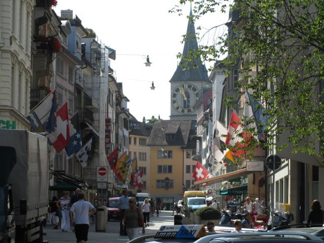

Zurich Voyage: A 4-Day Urban Adventure
Introduction
Zurich, Switzerland’s largest city, is a place where pristine lakeside views meet cosmopolitan flair. Known for its historic old town, vibrant cultural scene, and mouthwatering Swiss cuisine, Zurich offers a seamless blend of natural beauty and urban sophistication. Join me, Carl, as I explore this city for four unforgettable days—embracing everything from the medieval cobblestone streets to the sleek modern districts.
A Brief History: Originally a Roman customs post, Zurich evolved into a significant trade hub in the Middle Ages. It played a vital role in the Protestant Reformation under the leadership of Huldrych Zwingli. Today, Zurich stands as a global financial powerhouse while still cherishing its rich heritage and breathtaking landscapes.
Day 1: Arrival & Lakeside Strolls
After landing at Zurich Airport, I hopped on a train (quick tip: Swiss trains are super punctual!) to reach the city center. My hotel was a stone’s throw from the historic Old Town, making it the perfect base for day one’s explorations. I spent the afternoon wandering along the shores of Lake Zurich, watching swans glide by and soaking in the mountain views. If you’re jet-lagged, nothing beats the serenity of this lakeside promenade.
For dinner, I dove right into local flavors with a plate of Zürcher Geschnetzeltes—thinly sliced veal in a creamy mushroom sauce—accompanied by crisp Rösti. Delicious enough to make you forget you ever complained about airline food.
Day 2: Old Town Charms & Modern Marvels
Waking up bright and early, I ventured into the Altstadt (Old Town), where narrow alleys reveal medieval architecture, quaint cafes, and boutique shops. The Grossmünster, with its iconic twin towers, was a highlight—climbing to the top rewards you with panoramic city views.
By afternoon, I switched gears and explored the sleek side of Zurich at Bahnhofstrasse. Known as one of the world’s priciest shopping avenues, it’s the place to admire Swiss watches, designer labels, and maybe grab a bite at Sprüngli for some heavenly chocolate indulgence. (Warning: Your wallet might cry a little.)
Day 3: Mountain Escapes & Art Escapades
Day three took me beyond the city limits to Uetliberg, Zurich’s very own “mountain.” A short train ride whisks you up to a realm of hiking trails and jaw-dropping views over the city and the Alps. If you’re into nature photography, this is the spot for those postcard-perfect shots.
Back in town, I spent the afternoon at Kunsthaus Zurich, the city’s premier art museum. Whether you’re a fan of Old Masters or modern installations, there’s plenty to feast your eyes on. Dinner was a casual affair at a local beer hall, where I sampled craft brews and struck up conversations with fellow travelers.
Day 4: Market Finds & Fond Farewells
My last day was all about immersion in local life. First stop: Bürkliplatz Market, a bustling gathering of farmers, artisans, and florists. Strolling between stalls of fresh produce, cheese wheels, and handcrafted souvenirs felt like a crash course in Swiss culture.
In the afternoon, I wandered around the emerging creative hub of Zurich West—an industrial area turned hipster paradise filled with trendy cafes, street art, and quirky boutiques. By evening, I was back by the lake, savoring a final Swiss chocolate-laced sunset, pondering how Zurich managed to be both so chill and so sophisticated at once.
Highlights
- Lake Zurich – A tranquil setting perfect for scenic walks and boat rides.
- Altstadt – Medieval charm meets modern cafes and boutiques.
- Bahnhofstrasse – Luxury shopping, Swiss watches, and top-notch chocolate.
- Uetliberg – Panoramic hikes and postcard-perfect views.
- Kunsthaus Zurich – A must-visit for art aficionados.
- Bürkliplatz Market – Fresh produce, local crafts, and vibrant ambiance.
- Zurich West – Hipster district teeming with street art and trendy hangouts.
Practical Information
Transportation
Zurich Airport (ZRH) connects globally, and the Swiss rail system is famously reliable. Within the city, trams and buses are punctual and clean. Consider a Zurich Card for unlimited travel and discounted museum entries. Taxis can be pricey, so plan accordingly.
Accommodation
Zurich offers a range of stays—from five-star lakeside hotels to cozy hostels. I picked a mid-range spot near the Old Town for easy access to both medieval squares and modern districts.
Budgeting
Switzerland is known for higher living costs. Expect to spend CHF 80–250 daily, depending on accommodation, dining, and activities. Lunch at a cafe can run around CHF 15–25, while dinner might climb to CHF 30–50 or more.
Tips & Recommendations
Do’s and Don’ts
- Do: Validate your tram or bus ticket; Swiss ticket inspectors do exist!
- Don’t: Be late. Swiss punctuality is no joke.
- Do: Bring layers. Weather can shift quickly near the lake and mountains.
- Don’t: Litter. Cleanliness is part of Zurich’s charm.
- Do: Try local dishes like Fondue or Zürcher Geschnetzeltes.
- Don’t: Assume everything is walkable—some hills can be steep, so plan for public transport.
Packing List
- Comfortable shoes for cobblestone streets and mountain trails
- Weather-appropriate clothing (bring a light jacket even in summer)
- Reusable water bottle (Swiss tap water is top-notch)
- Camera or smartphone for those Alpine vistas
- Travel adapter (Type C or J) for Swiss outlets
Local Etiquette
In Zurich, courtesy is key. Greet shopkeepers with a friendly “Grüezi” (hello), maintain a quiet demeanor on public transport, and always respect queue lines. Tipping around 5–10% in restaurants is customary but not mandatory.
Cultural Immersion
Want a deeper dive? Sign up for a Swiss cooking class to master the art of Fondue or Raclette. Alternatively, drop by the Opera House for a classical music performance—Zurich’s passion for the arts is as strong as its love for precise timekeeping.
If you’re feeling bold, consider a swim in the Limmat River at one of the designated “badis.” It’s a local summer tradition and offers a refreshing new angle of the city skyline.
Food & Cuisine
Zurich’s culinary scene is a feast of Swiss classics and international innovations. Highlights include:
- Zürcher Geschnetzeltes – Veal in a creamy sauce, best paired with Rösti.
- Fondue – Melted cheese heaven, often shared with friends.
- Raclette – Hot melted cheese scraped over potatoes and pickles.
- Swiss Chocolate – Because you’re in Switzerland. Enough said.
- Birchermüesli – A Swiss breakfast staple of oats, fruit, and yogurt.
For a sweet tooth fix, indulge in Luxemburgerli (mini macarons) at Confiserie Sprüngli—just try not to eat the whole box in one go.
Adventure & Activities
Zurich might be compact, but it’s full of surprises. From kayaking on Lake Zurich to paragliding over the nearby Alps, you can easily balance city life with outdoor thrills. If you prefer a slower pace, rent a bike and pedal through the city’s leafy parks, or explore hidden alleyways in the Altstadt for an off-the-beaten-path vibe.
One of my personal favorites? Hiking the Uetliberg trail for jaw-dropping vistas—just be prepared to break a sweat on the incline!
Personal Stories
One evening, I struck up a conversation with a local artist at a riverside pop-up bar along the Limmat. We chatted about Swiss design, global politics, and of course, cheese. By the end of our chat, I felt like I’d gained a friend and a fresh perspective on how Zurich’s creative community thrives beneath its polished exterior.
Another memorable moment was discovering a small chocolate workshop in a side street near Bahnhofstrasse, where the chocolatier let me sample new flavors in development. Let’s just say Swiss chocolate will never taste “ordinary” to me again.
Conclusion
Zurich manages to be both serenely beautiful and buzzingly modern—a place where you can watch swans on the lake by day and dance at an underground club by night. My four days here were a testament to Switzerland’s knack for blending tradition with innovation, and I left with a heart full of scenic memories and a belly full of cheese and chocolate.
Until next time, happy travels!
Visitor Testimonials
"Zurich’s pristine streets and stunning lake views took my breath away. The local food scene was a pleasant surprise—fondue for days!"
"I loved how you can hop from historic squares to futuristic skyscrapers in minutes. Zurich truly has something for everyone."
Follow My Adventures
Stay connected and follow my journey through the links below: